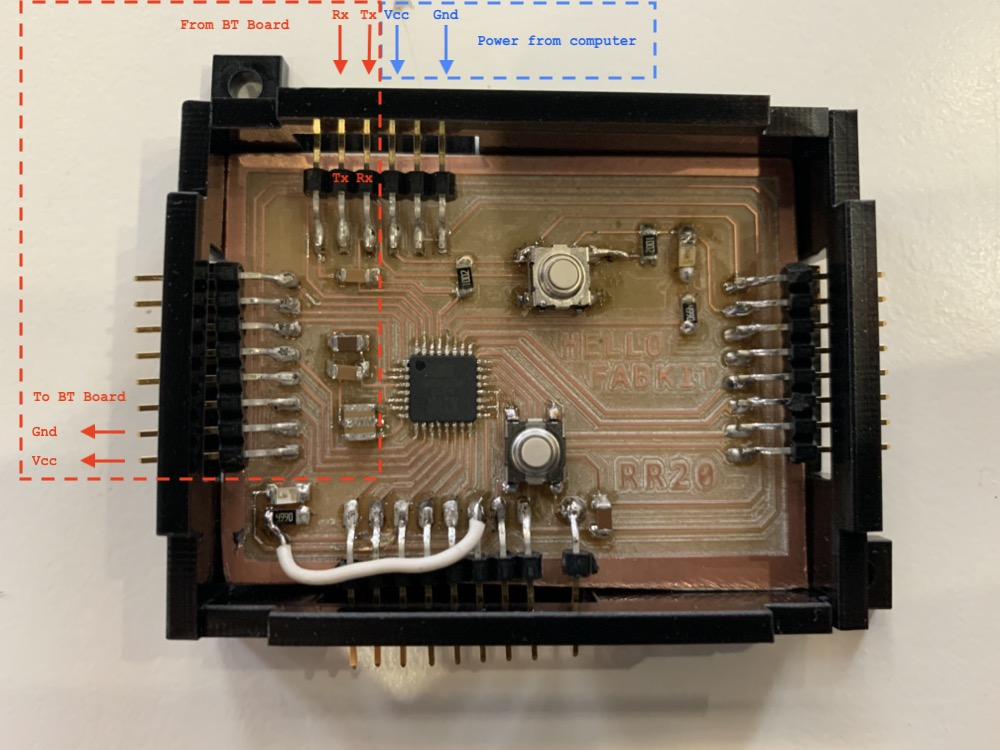
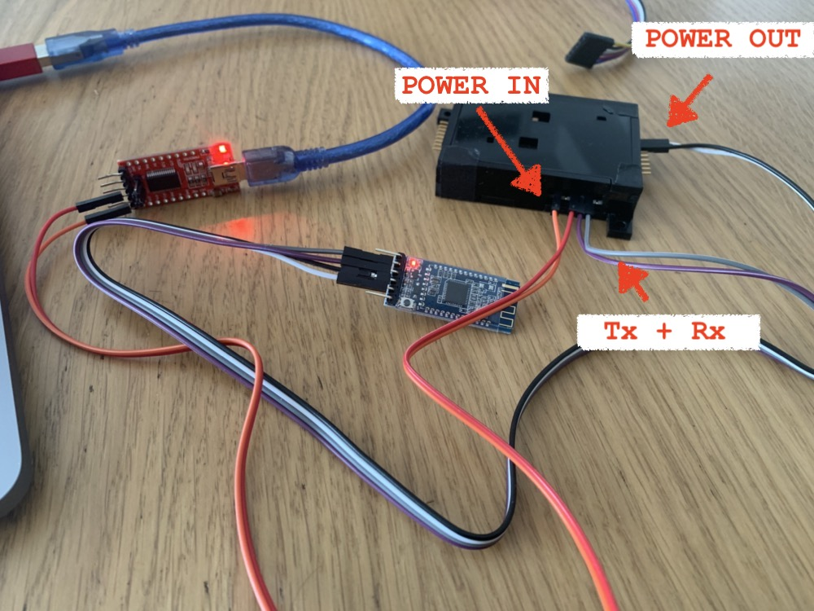

<!DOCTYPE html>
<html lang="en"></html>
<head>
  <meta charset="utf-8">
  <meta content="IE=edge" http-equiv="X-UA-Compatible">
  <meta content="width=device-width, initial-scale=1" name="viewport">
  <title> Rafael Rebolleda — Fab Academy 2020 Documentation</title>
  <!-- Google Fonts-->
  <link rel="stylesheet" href="https://fonts.googleapis.com/css?family=Catamaran&amp;display=swap">
  <link rel="stylesheet" href="../css/main.css">
</head>
<body> 
  <nav>
    <header>
      <ul>
        <li>Rafael Rebolleda</li>
        <li>ESNE (+ LEON)</li>
        <li>Madrid, Spain</li>
      </ul>
      <p class="bio">CX consultant and professor. Single, semi-remote Fab Acadeny student.</p>
    </header>
    <ol>
      <li><a class="red" href="../">About me</a></li>
      <li><a class="blue" href="../FP/">Final Project</a></li>
      <li><a class="blue" href="../DEV/">Project Development</a></li>
    </ol>
    <h1>Assignments</h1>
    <ol> 
      <li><a href="../W1/">Principles & Practices</a></li>
      <li><a href="../W2/">Computer Aided Design</a></li>
      <li><a href="../W3/">Computer Controlled Cutting</a></li>
      <li><a href="../W4/">Electronics Production</a></li>
      <li><a href="../W5/">3D Scan + Printing</a></li>
      <li><a href="../W6/">Electronics Design</a></li>
      <li><a href="../W7/">Computer Controlled Machining</a></li>
      <li><a href="../W8/">Embedded Programming</a></li>
      <li><a href="../W9/">Input Devices      </a></li>
      <li><a href="../W10/">Applications & Implications</a></li>
      <li><a href="../W11/">Output Devices</a></li>
      <li><a href="../W12/">Interface Programming</a></li>
      <li><a href="../W13/">Intellectual Property</a></li>
      <li><a href="../W14/">Embedded Networking</a></li>
      <li><a href="../W15/">Molding & Casting</a></li>
      <li><a href="../W16/">Wildcard: Waterjet CCC</a></li>
      <li><a href="../W17/">Mechanical & Machine Design</a></li>
    </ol>
  </nav>
  <main>
    <h1>W14: Embedded Networking</h1>
    <p>I get to this one assignment very late in the game and still with heavy restrictions on Fab Lab access.</p>
    <p>I have a Bluetooth module laying around and I will try to connect it to <a href="../W6">my Hello Fab Kit board</a> which I created for the <a href="../FP/">Final Project</a> and to my mobile device to send commands between them.</p>
    <h2>The connections</h2>
    <h3>Hello Fab Kit Board</h3>
    <h3>On the mobile device</h3>
    <p>I'm using the free <a href="https://apps.apple.com/es/app/arduinoblue/id1340487989?l=en">Arduino Blue</a> app to connect to the Bluetooth module. </p>
    <video src="app.mp4" autoplay muted loop controls></video>
    <h2>Integration</h2>
    <p>It turned out to be much simpler than I expected, but that is also because I learned (and suffered) a lot with serial bus comms on the <a href="../W12">Interface Programming assignment</a></p>
    <video src="commands.mp4" autoplay muted loop controls></video>
  </main>
  <footer>
    <hr>
    <p><a rel="license" href="http://creativecommons.org/licenses/by-nc/4.0/"></a><br />This work is licensed under a <a rel="license" href="http://creativecommons.org/licenses/by-nc/4.0/">Creative Commons Attribution-NonCommercial 4.0 International License</a>.</p>
  </footer>
</body>